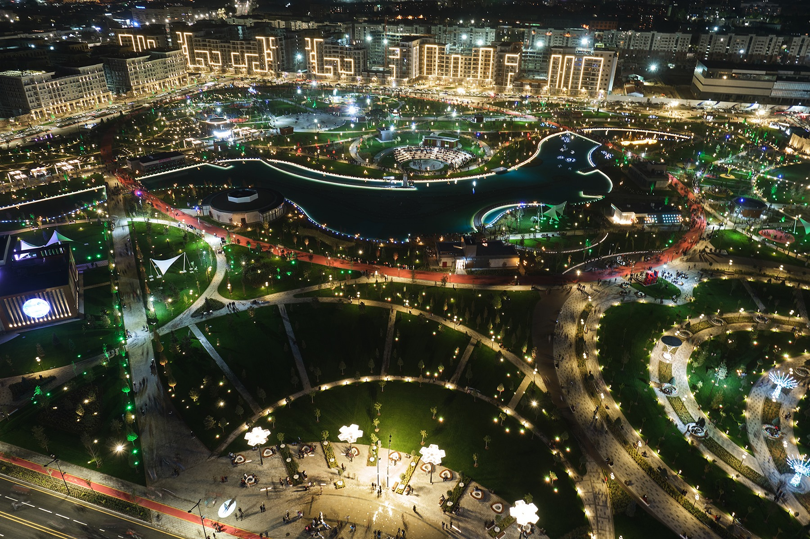
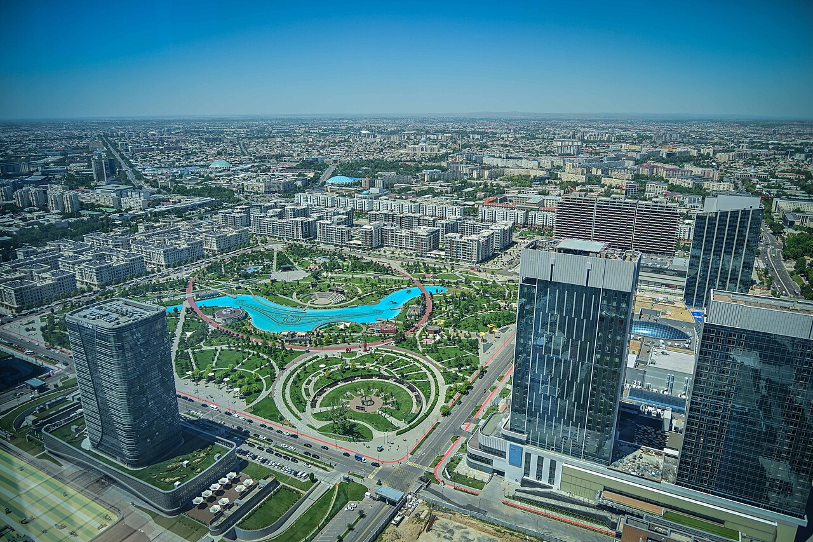

Toshkent shahri haqida ma'lumot
Toshkent shaxri
Toshkent — Oʻzbekistonning poytaxti va eng yirik shahri, aholisi boʻyicha Markaziy Osiyodagi eng yirik qadimiy shaharlardan biri.


Suratda Toshkent shahri markazidagi Tashkent City sayilgohi (Tashkent City Park) tasvirlangan.
